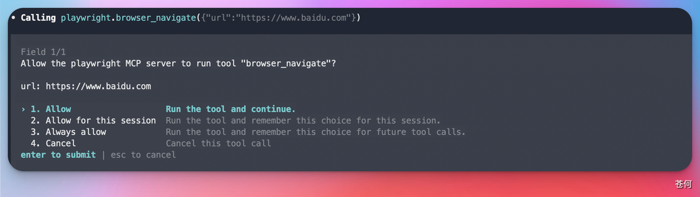
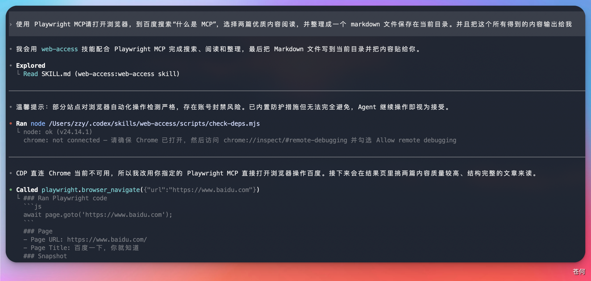
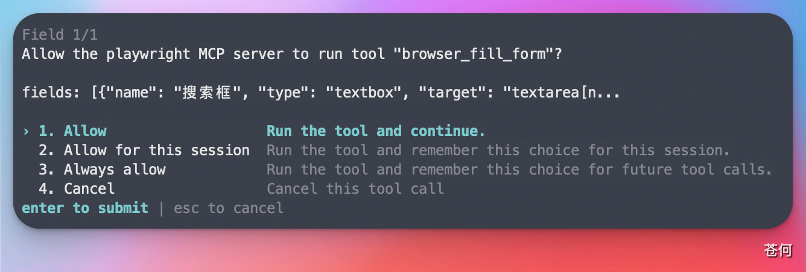
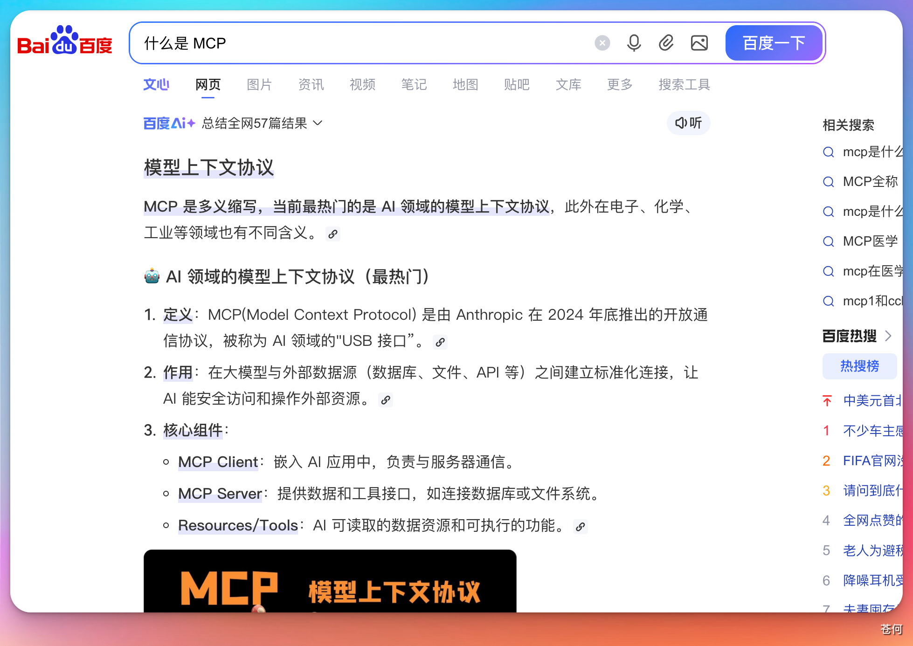
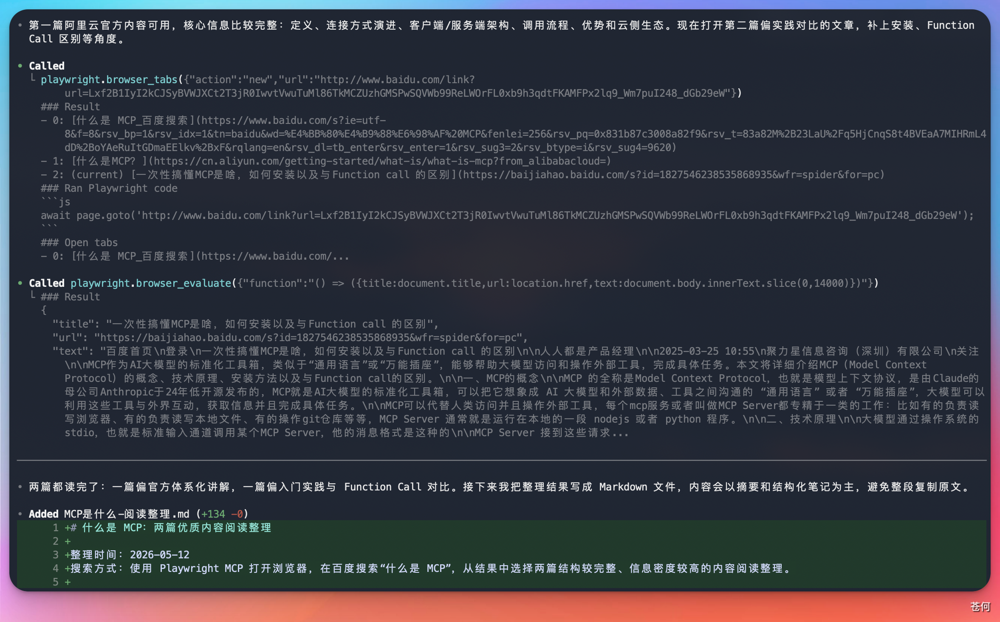

本章节介绍 Playwright MCP。这是一个基于 Playwright 的 MCP 服务器，它把打开浏览器、访问网页、点击按钮、填写输入框、读取页面内容、截图、验证结果等浏览器操作，封装成 AI 可以调用的工具。
像 Codex 这类编程类的 Agent，不仅能够编写和修改代码，还能够打开网页，像人一样检查页面是否跑通。
本章节使用命令行的方式，来学习 MCP 的安装和使用。
1. 安装#
运行以下命令完成安装：
codex mcp add playwright npx @playwright/mcp@latest
验证安装是否成功： 进入 Codex，使用 /mcp 命令列出当前已经安装的 MCP 服务列表。


2. 如何使用#
通过 /mcp 命令确认安装成功之后，我们使用 Playwright MCP 来完成一个测试任务：
- 让它打开浏览器去搜索"什么是 MCP"
- 找几篇相关教程
- 把搜索结果保存到 Markdown 本地文件里
提示词：
请打开浏览器，到百度搜索"什么是 MCP"，选择两篇优质内容阅读，并整理成一个 markdown 文件保存在当前目录。
在执行过程中，需要我们放开一些权限，让它去调用相关工具。比如：
- 填写搜索框
- 填写文本
- 打开网页
这些操作在未授权的情况下，需要手动放行。

在执行过程中，你确实会发现它打开了浏览器，并且搜索了相关内容，还打开了两篇文章，这些都是可以看到的。

最终它会把得到的结果总结输出给我们，然后写入到本地的 Markdown 文件里。

Codex 根据搜索到的两篇文章的内容进行总结，给我们进行相关的阐述说明。

参考来源#
本文的操作思路和演示场景参考了以下 B 站创作者的视频内容，感谢原作者的分享：
- 📺 保姆级 Claude Code 速成，必学！简单！【附完整文档】
来源：哔哩哔哩
链接：https://b23.tv/xDKx6jX
本文截图均为作者本人实际操作所得，文字内容在参考基础上进行了重新整理与二次创作。如有侵权，请联系删除。